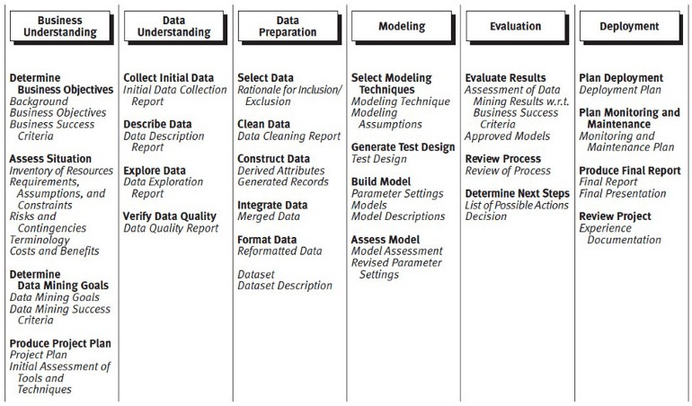

40 Development
40.1 Misc
- Notes from
- Adapting Project Management Methodologies to Data Science
- Along with overview of various methodologies, provides list of Agile foundational values and key principles
- Adapting Project Management Methodologies to Data Science
- Loose implementation of CRISP-DM with agile-based practices is recommended
- Waterfall or the newer variation with feedback loops between adjoining stages should not be used
- Designed for manufacturing and construction where the progressive movement of a project is sequential. DS typically requires a lot of experimentation and a modification of requirements.
- Although can be useful for certain stages of the data science project such as planning, resource management, scope, and validation
- Prior to full deployment, run a pilot deployment
- Only a few groups are given permission to use the product
- Receive feedback (e.g. weekly meetings), fix bugs, and make changes
- After full deployment
- Have an education and training session for users
- Note problem areas. These may be potential next steps to improving the product
- Check-in periodically with users to get feedback
- Have an education and training session for users
- Protyping and Testing
- See Lean Data Science
- The idea is to build things that deliver value quickly
- Iterative Building Steps
- Build ‘good enough’ versions of the tool or project (MVPs)
- Give these to stakeholders to use and get feedback
- Incorporate feedback
- Return to stakeholders to use and get more feedback
- Iterate until project the stakeholder and you feel it has reached production-level
- Break each project down into a set of smaller projects
- Example:
- MVP to test if the idea is feasible
- More functional version of the MVP
- Productionized version of the product.
- Track the impact of each of the sub-projects that comprise the larger projects
- At each of these milestones, decide on whether to progress further on a project by using taking the impact score of the subproject into account
- Example: rule-based chatbot manages to
- Chatbot: successfully helps 10,000 customers a month
- 10,000 customers ⨯ 3 min average call = 30,000 mins = 500 hours.
- Call Center Agent
- Call-center agent’s time costs $200/hr in terms of salary and infrastructure,
- Conclusion: MVP chatbot saves $100K a month and you could likely save even more with a more sophisticated chatbot.
- Chatbot: successfully helps 10,000 customers a month
- Example: rule-based chatbot manages to
- Example:
- See Lean Data Science
Communication
- Remind stakeholders of what it is we agreed in last meeting you’d do, what you did and how to interpret the results
- State what it is you need from the stakeholder.
- State whether the project progress in the middle, at it’s end, you’re wrapping up or what’s going on?
- A summary slide or results peppered with comments leading me through what it is I am looking at
- The Minto Pyramid
- Organize the message so that it starts with a conclusion which leads to the arguments that support it and ends in detailed information.
- Process
- Write conclusion (2-3 sentences max)
- Supporting arguments: Try to make them concise bullet points
- Link to a more detailed explanation at the bottom if need be
- Might be useful to time the arrival when the stakeholder is most likely able to read it.
- e.g. If a stakeholder has a meeting at 9:30 every morning, it may be better to time the sending of the report to before or after that meeting.
40.2 Kanban
{kind=link}
- Physical or digital board where tasks are then outlined as story cards.
- Every card will be extracted from left to right until it is completed.
- flexibility to execute tasks without getting constant deadlines
- Misc
- Seems like this could be used within a sprint (columns would have to be defined according to the sprint plan)
- Advantages
- bottlenecks, overworked steps, etc. easily identified
- effective at communicating the work in progress for stakeholders and team members
- oriented towards individual tasks instead of batches like in scrums
- Disadvantages
- lack of deadlines can lead to longer project times
- challenging to define the columns for a data science Kanban board
- Customer interaction is undefined. As such, customers may not feel dedicated to the process without the structured cadence of sprint reviews
40.3 CRISP-DM
{kind=link}
Cross-Industry Standard Process for Data Mining
Defacto standard for data mining
Supports replication, generalizable to any DS project
Phases (not all are sequential, some phases are iterative):
BizSci Version
- View Business as a Machine
- Isolating business units
- Internal: Sales, Manufacturing, Accounting, etc
- External: customers, suppliers
- Visualizing the connections
- Defining objectives
- Collecting outcomes
- Isolating business units
- Understand The Drivers
- Investigate if objectives are being met
- Synthesize outcomes
- Hypothesize drivers
- At this stage, it’s critical to meet with subject-matter experts (SMEs). These are people in the organization that are close to process and customers. We need to understand what are the potential drivers of lead time. Form a general equation that they help create.
- Measure Drivers
- Collect Data
- Collect data related to the high level drivers. This data could be stored in databases or it may need to be collected. We could collect competitor data, supplier data, sales data (Enterprise Resource Planning or ERP data), personnel data, and more.
- May require effort to set up processes to collect it, but developing strategic data sources becomes a competitive advantage over time.
- Develop KPIs
- Requires knowledge of customers and industry. Realize that a wealth of data is available outside of your organization. Learn where this data resides, and it becomes a tremendous asset.
- Collect Data
- Uncover Problems And Opportunities
- Evaluate performance vs KPIs
- Highlight potential problem areas
- Review the our project for what could have been missed
- Talk with SME’s to make sure they agree with your findings so far.
- Encode Decision Making Algorithms
- Develop algorithms to predict and explain the problem
- Optimize decisions to maximize profit
- e.g. For classification, threshold optimization using a custom cost function to optimize resources, costs, precision, and recall (See Diagnostics, Classification >> Scores >> Custom Cost Functions
- Use systematic decision-making algorithms to improve decision making
- Measure The Results
- Capture outcomes
- Synthesize results
- Visualize outcomes over time
- We are looking for progress. If we have experienced good outcomes, then we need to recognize what contributed to those good outcomes.
- Questions
- Were the decision makers using the tools?
- Did they follow the systematic recommendation?
- Did the model accurately predict risk?
- Were the results poor? Same questions apply.
- Report Financial Impact
- Measure actual results
- Tie to financial benefits
- Report financial benefit to key stakeholders
- It’s insufficient to say that we saved 75 employees or 75 customers. Rather, we need to say that the average cost of a lost employee or lost customer is $100,000 per year, so we just saved the organization $7.5M/year. Always report as a financial value.
- Example: Customer Churn
- View business as a machine
- Isolating business units: The interaction occurs between Sales and the Customer
- Defining objectives: Make customers happy
- Collecting outcomes: We are slowly losing customers. It’s lowering revenue for the organization $500K per year.
- Understand The Drivers
- Investigate if objectives are being met
- Customer Satisfaction: Loss of customers generally indicates low satisfaction. This could be related to availability of products, poor customer service, or competition offering lower prices and/or better service or quality.
- Synthesize outcomes
- Customers are leaving for a competitor. In speaking with Sales, several customers have stated “Competition has faster delivery”. This is an indicator that lead time, or the ability to quickly service customers, is not competitive.
- Hypothesize Drivers
- Lead time is related to supplier delivery, inventory availability, personnel, and the scheduling process.
- Investigate if objectives are being met
- Measure Drivers
- Average Lead Time: The level is 2-weeks, which is based on customer feedback on competitors.
- Supplier Average Lead Time: The level is 3 weeks, which is based on feedback related to our competitor’s suppliers.
- Inventory Availability Percentage: The level of 90% is related based on where customers are experiencing unmet demand. This data comes from the ERP data comparing sale requests to product availability.
- Personnel Turnover: The level of 15% is based on the industry averages.
- Uncover Problems and Opportunities
- Our average lead time is 6 weeks compared to the competitor average lead time of 2 weeks, which is the first order cause for the customer churn
- Our supplier average lead time is on par with our competitor’s, which does not necessitate a concern.
- Our inventory percentage availability is 80%, which is too low to maintain a high customer satisfaction level. This could be a reason that churn is increasing.
- Our personnel turnover in key areas is zero over the past 12 months, so no cause for concern.
- View business as a machine
- View Business as a Machine
{kind=link}
{kind=link}
{kind=link}
40.4 Agile
40.4.1 Misc
- Resources
- https://www.atlassian.com/agile/project-management/overview
- features adaptability, continuous delivery, iteration, and short time frames
40.4.2 Terms
- Epic - collection of high level tasks that may represent several user stories
- Helps to map the model outcome and define the correct stakeholders for the project
- A helpful way to organize your work and to create a hierarchy.
- The idea is to break work down into shippable pieces so that large projects can actually get done and you can continue to ship value to your customers on a regular basis
- Delivered over a set of sprints
- Initiatives - collections of epics that drive toward a common goal
- Product Roadmap - plan of action for how a product or solution will evolve over time
- expressed and visualized as a set of initiatives plotted along a timeline
- Scrum - a framework that’s objective is to fulfill customer needs through transparent communication, continuous progress, and collective responsibility
- Data-Driven Scrum (DDS) - Scrums, as defined, have fixed lengths which can be an issue with DS projects
- Sprints - short periodic blocks that make up a scrum
- each usually ranges from 2-4 weeks
- Each sprint is an entity that delivers the full result.
- Composed of a starting point and requirements that complete the project plan
- Theme - an organization goal that drive the creation of epics and initiatives
- User Story - smallest unit of work or a task; an informal, general explanation of a software feature written from the perspective of the end user. Its purpose is to articulate how a software feature will provide value to the customer.
- After reading a user story, the team knows why they are building, what they’re building, and what value it creates.
40.4.3 Values for Data Analysis
- Decisions over dashboards: By focusing on what people want to do with data, we can move past the first set of questions they ask, focus on the valuable iteration and follow-up questions, build trust, cultivate curiosity and drive action.
- Functional analysis over perfect outputs: To enable quick iterations, we’re going to have to spend less time crafting perfect outputs and focus on moving from one question to the next as quickly as possible.
- Sharing data over gatekeeping data: We’re going to have to share responsibility for our data and data “products” with our business partners. This will help build trust, and keep us all accountable for cultivating great data products and data-driven cultures.
- Individuals and interactions over processes and tools: When in doubt, we need to rely on the relationships we’ve built with the business over the tools we’ve put in to help guide those relationships.
40.4.4 Data Science Lifecycle
{kind=link}
If at any point we are not satisfied with our results or faced with changing requirements we can return to a previous step since this methodology is focused on iterative development
Steps
- Business Understanding
- Define objectives: Work with customers/stakeholders to identify the business problem we are trying to solve.
- Identify data sources: Identify the data sources that we will need to solve it.
- Data Acquisition and Understanding
- Ingest the data: Bring the data into our environment that we are using for analytics.
- Explore the data: Exploratory data analysis (EDA) and determinine if it is adequate for model development.
- Set up a data pipeline: Build a process to ingest new data. A data pipeline can either be batch-based, real-time or a hybrid of the previous options.
- Note: While the data scientists on the team are working on EDA, the data engineers may be working on setting up a data pipeline, which allows us to complete this stage quicker
- Modeling
- Feature engineering: Creat data features from raw data for model training.
- Enhanced by having a good understanding of the data.
- Model training: Split the data into training, validation, and testing sets. Train models
- Model evaluation: Evaluate those models by answering the following questions:
- What are the metrics that the model achieves on the validation/testing set?
- Does the model solve the business problem and fit the constraints of the problem?
- Is this model suitable for production?
- Note: Could train one model and find that the results are not satisfactory and return to the feature engineering and model training stages to craft better features and try different modeling approaches.
- Feature engineering: Creat data features from raw data for model training.
- Deployment (Options)
- Exposing the model through an API that can be consumed by other applications.
- Creating a microservice or containerized application that runs the model.
- Integrating the model into a web application with a dashboard that displays the results of the predictions.
- Creating a batch process that runs the model and writes the predictions to a data source that can be consumed.
- Stakeholder/customer acceptance
- System validation: Confirm that the data pipeline, model, and deployment satisfy the business use case and meet the needs of the customers.
- Project hand-off: Transfer the project to the group that will manage it in production. l
- Business Understanding
40.4.5 Product Roadmap Examples
- Example
- Initiative: build a forecast system to predict sales for an ice cream company
- Epics:
- “As a Sales Manager, I need to understand which regions I need to focus my outbound effort based on the sales forecast”
- “As a Logistics Manager, I need to estimate demand so that I can prepare our production accordingly”
- User Story:
- “As a Logistics Manager, I need to see the forecast on my Production Dashboard”;
- “As a Logistics Manager, I need to have simulations around how weather predictions can change the forecast”;
40.4.6 Sprint Workflow
{kind=link}
Bad flow chart, should be a circle where review loops back to planning
sprint review - the scrum team and stakeholders review what was accomplished in the sprint, what has changed in their environment, and collaborate on what to do next
- These are necessary to avoiding issues that might destroy a project. (see below)
- Data scientist participation will help with their communication skills and increase transparency in what they’re doing
- Stakeholders might think a feature or ML result is feasible with the current data and tech stack. These are important to opportunities to explain why they aren’t feasible.
- Roles often bleed together. The planning portion is a good way to converge on a strategy of what to do next.
- These are necessary to avoiding issues that might destroy a project. (see below)
sprint planning (~15 minutes every two weeks)
- Develop the next sprint’s goals
- Do the next sprint’s goals align with our goals in 3 months
- Do the next sprint’s goals align with our annual team goals/strategic vision
- Revise the next sprint’s goals to align with these goals if necessary
- Break the sprint goals into tasks and sub tasks
- Assign the tasks/subtasks to members and estimate time to completion of these tasks
- Extended sprint planning (Every 3 months to roughly plan the next 3 months)
- Strategic meetings (6 months)
- Develop the next sprint’s goals
Some technical details to starting a project
- Notes from The Technical Blockers to Turning Data Science Teams Agile
- Start a repo
- in the organization acct not under a personal acct
- use readme as onboarding document
- last person to join is in-charge of it
- The last person will be best suited to edit/add details that clear up any confusion that they had when they were onboarded
- Include “This document is maintained by the most recent person to join the team. That person is currently: ____”
- Explicitly state that anyone can review code in your README. If someone isn’t familiar with a part of the code, they become so by reviewing it.
- last person to join is in-charge of it
- Edit the settings of your repo. Make the main branch protected, don’t allow anyone to push directly to the main branch, and only allow PRs that have passed unit-tests (more about this later) and have undergone a code review.
- Update the team’s skills related to Agile
- In the beginning, may not have a lot of tasks to assign as there may be design/requirements discussions
- Make sure everyone knows git and how to write unit tests
- Check team members’ personal accts to see how many commits they have, “https://github.com/search?q=author:
” - Check team members’ projects for unit tests
- If it doesn’t look like they don’t have much experience, assign a udemy, etc. course on the subject and require a certificate in order to be assigned tasks
- Check team members’ personal accts to see how many commits they have, “https://github.com/search?q=author:
- Assign tasks through Agile tools like ZenHub, Jira, or Trello
- Set-up a CI tool
- examples: Github Actions, TravisCI, CircleCI, or Jenkins
- add learning this tool as part of your ZenHub task boards and don’t allow people to move on until they’ve learned it.
- run your unit tests every time someone makes a PR
- Daily Stand-ups
- used to discuss what your daily work will be, and it should be short
- Project strategy meeting should be immediately after the stand-up
- Each team member answers only 3 questions:
- What will you do today?
- What did you do yesterday?
- Rather than a simple verbal status update. It can be better the show what you did.
- e.g. show your coding screen and walk everyone through you code
- Benefits
- Someone else on the team will have an idea for a better, faster, or simpler way to solve the problem
- Easier to catch a flaw after a few lines of code than after 1000 during a code review
- If you find out that someone on my team is doing something very similar, and you can save time by reusing code.
- Cool to see incremental progress every day instead of just the final product
- Rather than a simple verbal status update. It can be better the show what you did.
- What are you blocked by?
- Screen-share these three questions written out on a PowerPoint slide.
- Congratulate people on finishing the courses
- Assign a weekly changing role of scrum master
- The scrum master makes sure the 3 questions above are answered by everyone.
- This person doesn’t have to be the boss or most senior person.